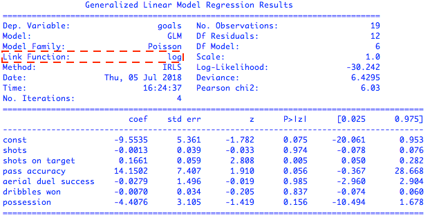

- 00 开篇词 打通修炼机器学习的任督二脉.md.html
- 01 频率视角下的机器学习.md.html
- 02 贝叶斯视角下的机器学习.md.html
- 03 学什么与怎么学.md.html
- 04 计算学习理论.md.html
- 05 模型的分类方式.md.html
- 06 模型的设计准则.md.html
- 07 模型的验证方法.md.html
- 08 模型的评估指标.md.html
- 09 实验设计.md.html
- 10 特征预处理.md.html
- 11 基础线性回归：一元与多元.md.html
- 12 正则化处理：收缩方法与边际化.md.html
- 13 线性降维：主成分的使用.md.html
- 14 非线性降维：流形学习.md.html
- 15 从回归到分类：联系函数与降维.md.html
- 16 建模非正态分布：广义线性模型.md.html
- 17 几何角度看分类：支持向量机.md.html
- 18 从全局到局部：核技巧.md.html
- 19 非参数化的局部模型：K近邻.md.html
- 20 基于距离的学习：聚类与度量学习.md.html
- 21 基函数扩展：属性的非线性化.md.html
- 22 自适应的基函数：神经网络.md.html
- 23 层次化的神经网络：深度学习.md.html
- 24 深度编解码：表示学习.md.html
- 25 基于特征的区域划分：树模型.md.html
- 26 集成化处理：Boosting与Bagging.md.html
- 27 万能模型：梯度提升与随机森林.md.html
- 28 最简单的概率图：朴素贝叶斯.md.html
- 29 有向图模型：贝叶斯网络.md.html
- 30 无向图模型：马尔可夫随机场.md.html
- 31 建模连续分布：高斯网络.md.html
- 32 从有限到无限：高斯过程.md.html
- 33 序列化建模：隐马尔可夫模型.md.html
- 34 连续序列化模型：线性动态系统.md.html
- 35 精确推断：变量消除及其拓展.md.html
- 36 确定近似推断：变分贝叶斯.md.html
- 37 随机近似推断：MCMC.md.html
- 38 完备数据下的参数学习：有向图与无向图.md.html
- 39 隐变量下的参数学习：EM方法与混合模型.md.html
- 40 结构学习：基于约束与基于评分.md.html
- 如何成为机器学习工程师？.md.html
- 总结课 机器学习的模型体系.md.html
- 总结课 贝叶斯学习的模型体系.md.html
- 结课 终有一天，你将为今天的付出骄傲.md.html
- 捐赠
16 建模非正态分布：广义线性模型
直观来看，上一篇文章介绍的逻辑回归只是对普通线性回归的输出加以变换，以满足问题的需要。但在这简单的现象背后，以逻辑回归为代表的这类线性模型的推广具有更加深刻的数学内涵，因而被称为广义线性模型（generalized linear model）。
线性模型的意义是建立了自变量和因变量的关联，当自变量变化时，因变量也会出现依照比例同等程度的变化。可是现实世界不是数学模型，如果硬要将线性模型套用在实际问题中，很可能会闹出笑话。
如果线性回归告诉你气温每下降1度，海滩上的游客就会减少100人，那么这条规律适用于科帕卡巴纳或者芭堤雅的问题不大，因为这些著名的度假胜地的游客基数数以万计。可是对于一个最多只能接待80名游客的不知名小海滩来说，气温下降1度意味着游客数目变成了-20，难不成工作人员也被冻跑了吗？这和不能听相声是一个道理：“笑一笑十年少”也是个线性模型，要是这个模型属实的话，哪怕只听一分钟相声我都要回到娘胎里去了。
物理学中有个概念叫半衰期，不严格地说，它指的是放射性元素的原子核半数发生衰变所需要的时间。元素的半衰期和原子的总量无关，100个原子中衰变50个的时间和剩下的50个原子中衰变25个的时间是一致的。和线性模型相比，以半衰期为代表的建模方式似乎更加符合真实世界的规律：因变量变化的绝对尺度通常是非线性的，但其变化比率却会和自变量呈现线性关系。
半衰期的思路也可以自然地延伸到离散输出的问题当中。如果说气温每上升1度，某人去海滩的概率就会翻一番，这是否意味着在原本有75%的概率去海滩时，温度的上升会将这个概率提高到150%呢？肯定不是。气温升高会让去海滩的概率增大，不去海滩的概率减小。如果将去与不去的概率之比定义为几率（odd），那么气温升高会导致相对的几率，而非绝对的概率翻一番显然是更合理的解释。按这种方式计算，气温上升1度会让75%的概率变成85.7%，这样就说得通了。
除了能否真实表示自变量和因变量的关联之外，线性回归将因变量的误差定义为正态分布其实也是过于理想的假设。比如当因变量是离散输出时，使用正态分布假设的建模效果自然会大打折扣。在一场足球比赛中，某只球队进球数目超过8个的概率微乎其微。因而在预测某队的进球数时，用正态分布对分布在01234567这些离散数值上的因变量进行建模就缺乏合理性，泊松分布才是更好的选择。
可不巧的是，正态分布恰恰是狭义线性模型的核心成分，它是联结最小均方误差和最大似然估计的纽带。在求解时，狭义的线性模型建立在最小均方误差的意义上，其解析解可由普通最小二乘法求得，求解时的一个基本前提是因变量，也就是回归结果的误差服从正态分布，这个推导过程我在“人工智能基础课”中有详细介绍。
误差的正态分布意味着因变量既可以增加也减少，其增加或者减少的范围虽然不存在上限，却以较大的概率出现在一个较小的区间内。如果按照前文的方式改造狭义线性模型的话，噪声的正态性质就不能得以保持，简洁明晰的解析解也会不再适用。因此，要拓展线性模型的应用范围，新的数学工具不可或缺。
广义线性模型（generalized linear model）就是这样的数学工具。在广义线性模型中，因变量可以满足任意形式的概率分布，它与自变量的线性组合之间的关系由联系函数定义。逻辑回归就是广义线性模型的一个实例，它的因变量是二进制的输出，联系函数则是对数几率函数。这个实例体现出了在一般意义上，广义线性模型要满足一些共性的条件。
首先，广义线性模型的基础是指数分布族（exponential family）。模型的因变量\(y\)由自然参数（natural parameter）\(\\boldsymbol \\eta\)决定，\(y\)的概率密度函数可以写成
\[ p(y; \\boldsymbol \\eta) = b(y) \\exp \[ \\boldsymbol \\eta ^T T(y) - a(\\boldsymbol \\eta)\] \]
其中的\(T(y)\)是个充分统计量（sufficient statistic），通常令它等于\(y\)本身；\(b(\\cdot)\)和\(a(\\cdot)\)都是已知的函数。虽然这个模型看起来比较复杂，但只要选择合适的\(b(\\cdot)\)和\(a(\\cdot)\)，常见的正态分布和指数分布等连续型分布，以及二项分布和泊松分布等离散性分布都能够满足这个条件，也就都属于指数分布族。
在因变量属于指数分布族的前提下，广义线性模型需要求解给定数据\(\\bf X\)时，充分统计量\(T(y)\)的条件期望。当\(T(y) = y\)时，模型的任务就退化为求解\(E(y | {\\bf X}) = \\mu\)，求解的方法就是利用联系函数定义代表自变量的数据和因变量的条件期望值之间的关系。
“线性”的含义正体现在联系函数的反函数\(g(\\cdot) {-1}\)的输入，也就是自然参数\(\\boldsymbol \\eta\)是数据的线性组合，写成数学表达式就是
\[ \\mu = g ^ {-1}(\\boldsymbol \\eta) = g ^ {-1} ({\\bf X}{\\boldsymbol \\beta}) \]
这说明数据的线性组合\({\\bf X}{\\boldsymbol \\beta}\)就是联系函数在输入为条件期望\(\\mu\)时的输出。
总结下来，指数分布族、联系函数和线性关系共同构成了广义线性模型的三大要素。自变量的线性组合就是指数分布族的自然参数，它被送入到激活函数中，计算得出给定数据时因变量的条件期望。在这个更加通用的概念层面上，我们就可以重新审视逻辑回归。
逻辑回归的输出\(y\)服从两点分布，如果两点分布的参数是\(\\psi\)，它的概率质量函数就可以写成\(p(y; \\psi) = \\psi ^ y (1 - \\psi) ^ {1 - y}\)，这个表达式稍做数学整理就是
\[ p(y, \\psi) = \\exp \[y \\log \\dfrac{\\psi}{1 - \\psi} + \\log (1 - \\psi)\] \]
令自然参数\(\\eta\)等于标量\(\\log\[\\psi / (1 - \\psi)\]\)，充分统计量\(T(y)\)等于\(y\)，两个函数\(b(y) = 1, a(\\eta) = -\\log (1 - \\psi)\)，逻辑回归中的因变量分布就变化为指数分布族的表示形式，因而属于指数分布族。这时，因变量\(y\)在数据\(\\bf X\)和参数\(\\psi\)下的条件期望就等于\(E(y | {\\bf X}, \\psi) = \\psi = \[1 + \\exp(-\\eta)\] ^ {-1}\)，这就是逻辑回归使用对数几率函数的原因所在。再将自然参数写成数据的线性组合，就是逻辑回归的方法了。
回头来看，广义线性模型解决了前文中提到的狭义线性模型的两个问题，这两个问题体现在广义线性模型的两种成分之上。自变量和因变量之间的系统性关联在广义线性模型中体现为系统成分（systematic component）。和狭义线性模型一样，系统成分仍然保留着对自变量的线性性质，只不过自变量线性组合的结果不再直接和因变量对应，而是要先做出非线性的变换。
因变量的误差在广义线性模型中以随机成分（random component）的角色出现。随机成分不受正态分布的限制，可以被建模成任何属于指数分布族的概率分布。使用指数分布族后，因变量的均值就能够决定误差的性质，从而包含了更多的信息。这不仅大大拓展了广义线性模型的应用范围，还保留了利用最大似然估计计算最优参数的可行性。
说到现在，系统成分和随机成分还是井水不犯河水的独立数量，将它们联系起来的任务就落在了联系函数身上。联系函数将因变量的数学期望表示成自变量线性组合的函数。
在普通线性模型中，联系函数就是因变量本身；而在逻辑回归等比较简单的广义线性模型里，联系函数将指数分布中的自然参数表示成自变量的线性组合，这样的联系函数就是正则联系函数（canonical link）。
正则联系函数的好处是保证待估计参数\(\\boldsymbol \\beta\)的最小完全统计量存在，所有关于\(\\boldsymbol \\beta\)的信息都可以由一个和\(\\boldsymbol \\beta\)维度相同的函数获得。
和普通线性模型一样，广义线性模型也可以从贝叶斯的角度去认识。
贝叶斯学派将待估计的参数同样视为随机变量，因此可以假设参数\(\\boldsymbol \\beta\)满足多维正态分布，并将它结合到原始的最大似然估计中。之所以不使用均匀分布作为先验分布的原因是当训练数据线性可分时，这种无信息的先验会让似然估计无法计算出结果，相当于将简单的问题复杂化。引入先验分布可以简化模型选择的过程，自动起到正则化的作用，但其计算也会更加复杂，需要通过数值方法来求解。
Scikit-learn库只能够实现逻辑回归，要构造通用意义上的广义线性模型的话，就要借助侧重统计分析的statsmodels。在这里我以泊松回归（Poisson regression）为例。
泊松分布适用于描述单位时间或空间内随机事件发生的次数，比如电话交换机接到呼叫的次数，汽车站台的候客人数，机器出现的故障数，自然灾害发生的次数等。在足球比赛中，由于某支球队在每场比赛的进球数是典型的计数型变量，故而通常使用泊松分布来建模。
如果以新科英超冠军曼城队作为数据采集对象，统计曼城队在2017-18英超赛季所有主场比赛中的进球数，得到的就是包含19个样本的数据集。这个数据集的因变量是符合泊松分布的进球数目，自变量则考虑了一系列和进攻有关的数据，包括射门次数（shots）、射正次数（shots on target）、传球成功率（pass accuracy）、争顶成功率（aerial dual success）、过人次数（dribbles won）和控球比率（possession）这么几个属性。用这些属性对进球数进行泊松回归的拟合，可以得到如下的结果

基于所有属性的泊松回归结果
从结果中可以看出，泊松回归使用的联系函数是自然对数函数。在统计学的显著性上，射正次数、传球成功率和控球比率三个属性对进球数有明显的影响，另外三个属性对进球数基本没有贡献。利用这三个强相关的属性来拟合泊松回归，又可以得到下面的结果
基于强相关属性的泊松回归结果
可以看到，基于强相关属性计算出的线性系数基本没有变化。由于泊松回归使用的联系函数是对数函数，所以线性回归分析出来的结果是因变量期望值的对数，要解释计算出的参数就得对它们做个指数运算。\(exp(x_1) = 1.18\)可以粗略地解释为当其他条件不变时，每多一脚命中门框的射门都能让进球数变成原来的1.18倍。但整体来看，广义线性模型在增强表达能力时，付出的是可解释性的代价。
今天我和你分享了广义线性模型的概念与原理，它克服了狭义线性模型的一些限制，拓展了线性模型的应用范围。其要点如下：
广义线性模型从模型解释性和变量分布特性上对普通线性模型做了推广；
广义线性模型假定因变量服从指数分布族中的概率分布，这代表了模型中的随机成分；
广义线性模型中的自变量和因变量依然由线性系数决定，这代表了模型中的系统成分；
联系函数建立系统成分和随机成分的关系，将指数分布的自然参数表示为自变量的线性组合。
最后要说明的是，广义线性模型和一般线性模型（general linear model）虽然名字相似，却是两个不同的概念，你可以了解下他们之间的区别，并在这里分享你的理解。
© 2019 - 2023 Liangliang Lee. Powered by gin and hexo-theme-book.